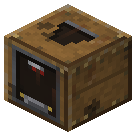
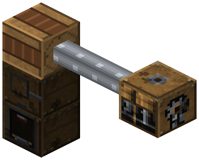

Cartridge Press
Era 2Steam and mechanics

idle

running
Right-click with a die to change caliber. Drive unit on top: steam pipe or shaft pulley into it. No steam or shaft - by lever: sneak + empty hand pulls the lever (twice slower) and takes cartridges.
Parameters
| Era | 2 — Steam and mechanics |
|---|---|
| Multiblock | no |
| Drive | shaft 2 hp, steam |
| Tanks, mB | 4000 |
| What it does | cartridges (case + bullet + primer + powder charge) |
Numbers
| cartridge press on a shaft | 2 hp |
|---|---|
| cartridge press: steam | 100 mB |
| cartridge press: cycle | 60 ticks |
Fed by
- Smokeless Powder ← Chemical Reactor, High-Pressure Reactor
- steam ← Reactor Steam Generator
- shaft ← Steam Engine, High-Pressure Steam Engine (transmission)
Feeds
- Intermediate Cartridge → Design Bureau
- Rifle Cartridge → Design Bureau
Assembly
Clicking the Drive Unit works like clicking the machine. Steam pipe into the Drive Unit or a shaft; without them — the lever: sneak + empty hand.
Bottom — the press table with the die. Goes first.

On top — the Drive Unit (steam cylinder under a casing). Without it — hand lever only, twice slower.

The pulley goes right against the Drive Unit (on top or beside), shaft into the end of a steam engine. A pulley at the bottom does nothing.

assembled

running
Faded blocks were placed in earlier steps.